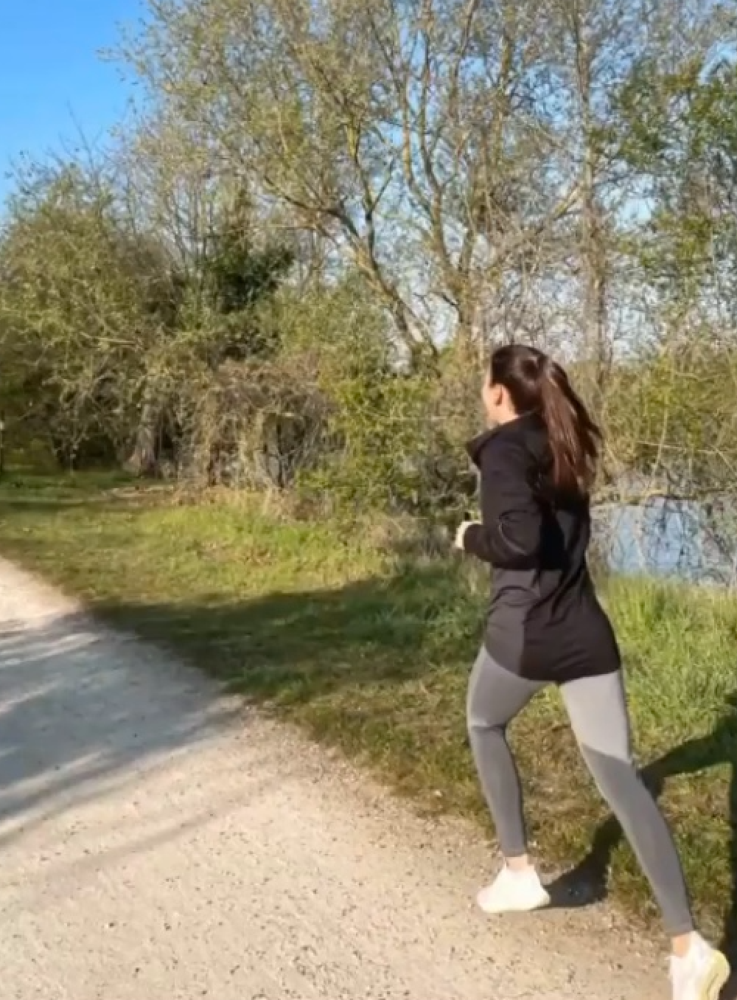
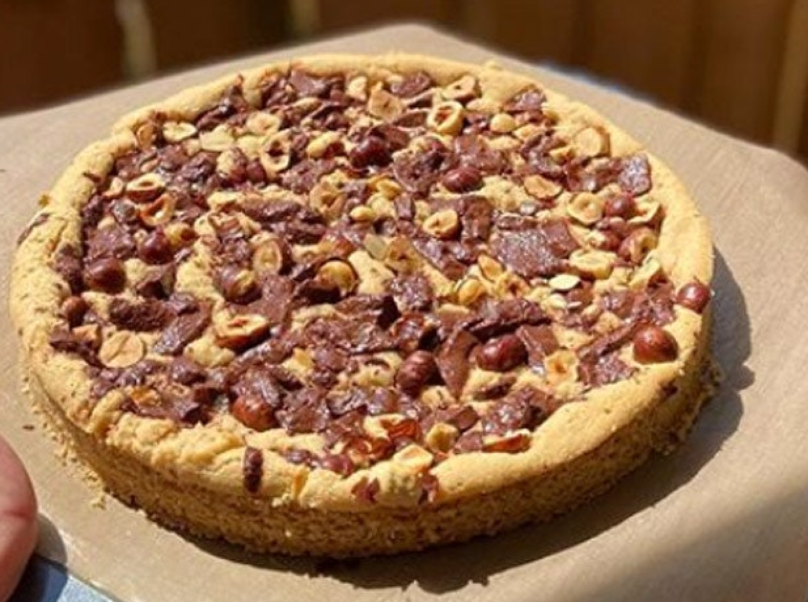
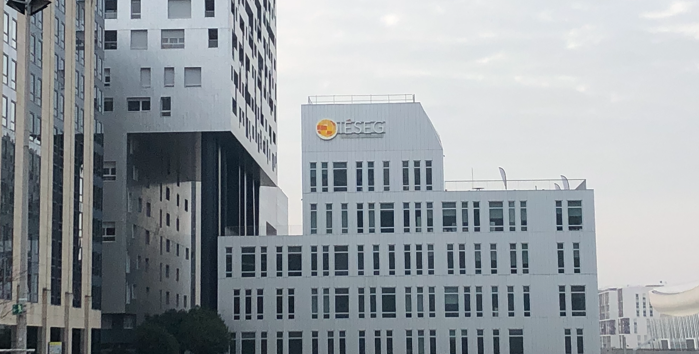
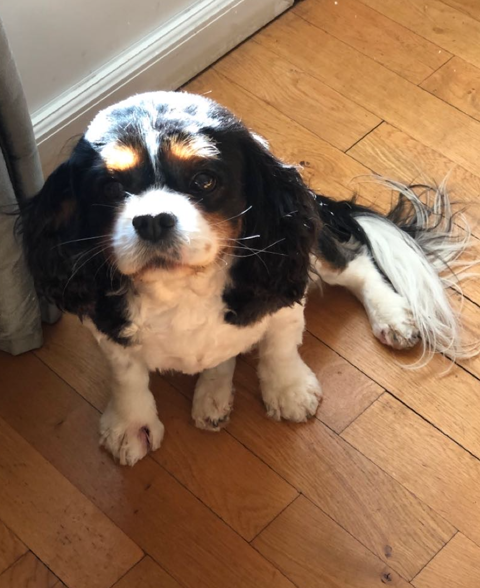

I'm fond of sports, especially running. I'm also really interested in cooking for my friends, my family and myself. I study at IESEG Paris which allowed me to make many friends with whom to go out. I'm full of energy, being outside walking my dog is my favourite pastime when I'm scared of being bored at home.
Discover my Linkedin profileI am passionate about sports. I work out and run six days a week. I never miss a session. I would run around the world if I could. I have already run severeal semi-marathons. I also enjoy hiking, swimming and horse riding. Sport is what allows me to free myself, to clear my mind and to expend my energy. A day without sport is a bad day!
I love to cook. In my opinion, cooking a good dish for those around you is a simple gesture that makes you happy. I often cook while waiting for my family to come home from work, or to celebrate my friends' birthdays. It is also a way for me to work on my patience and my meticulousness. If some dishes are easy to make, others require a lot of patience.
I study at the IESEG School of Management in Paris where I spend most of my week. I like to attend some classes, but I must admit that others do not correspond at all to what I wish to do later on...
My loved ones are very important to me. I need to spend time with my family and friends. When they are not available, I often live to walk my dog Madness. He is always up for a walk.
